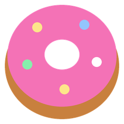
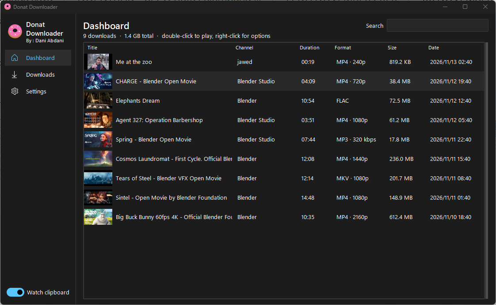
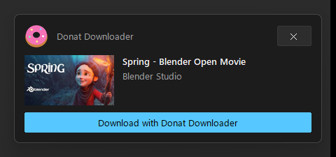
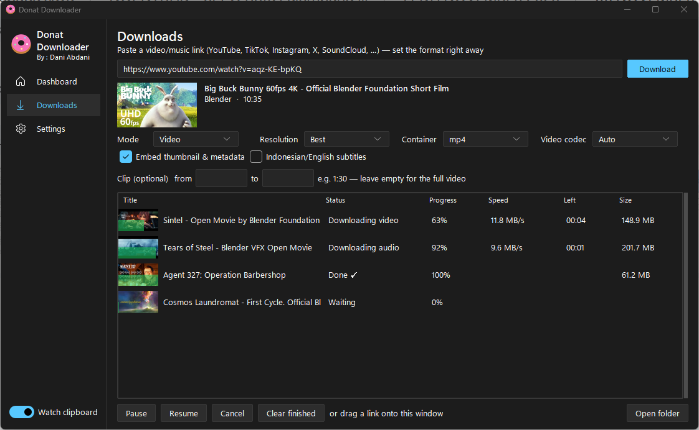
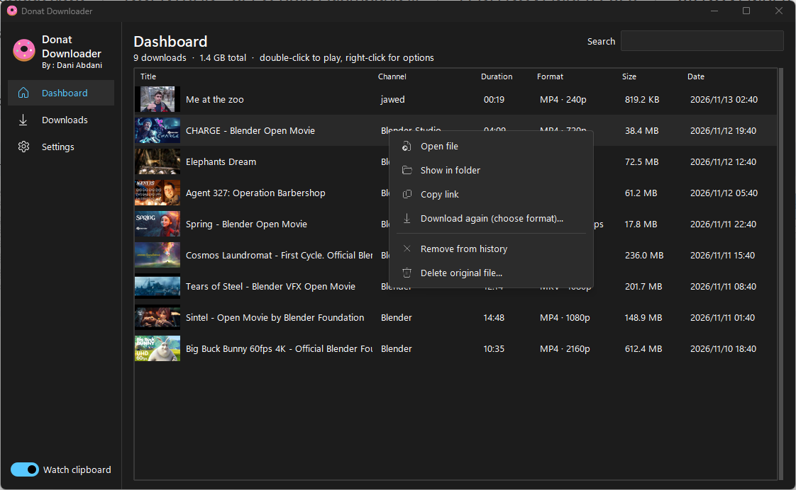
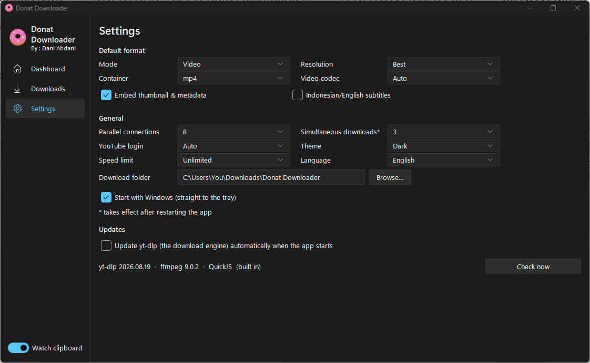
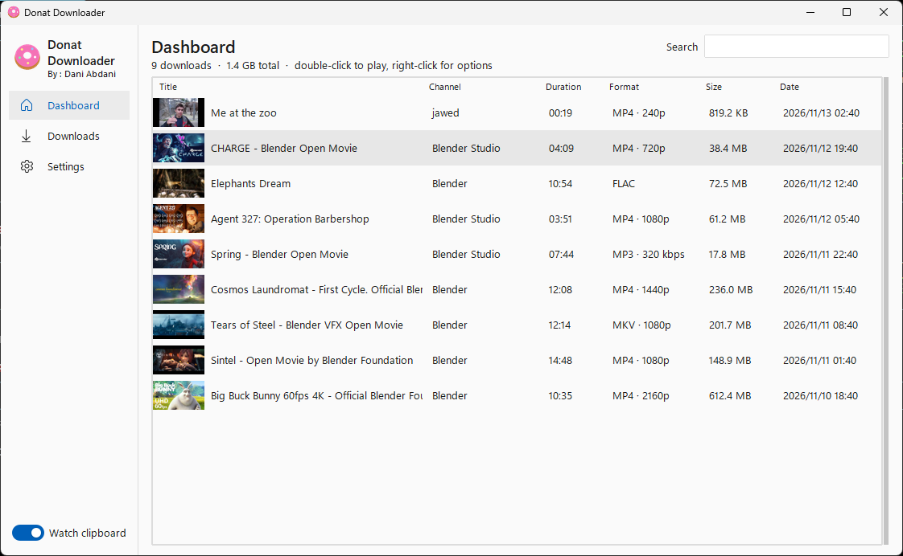

A fast, modern downloader for video and music from YouTube and 1,700+ other sites. Copy a link, pick a format, done.
Free and open source · one ~33 MB exe · Windows 10 / 11, 64-bit

No browser extension and no copy-paste dance.
From YouTube, TikTok, Instagram, X, SoundCloud and 1,700+ more sites, anywhere on your PC.
A card pops up above the tray with the title and thumbnail. Click to open the format panel.
MP4 in 4K, MP3 at 320 kbps, FLAC, or just a clip from 1:30 to 2:45. Press Download.

One small exe. FFmpeg and a JavaScript runtime are built in, so there is nothing else to install.
MP4, MKV or WebM up to 2160p with H.264, VP9 or AV1. Audio in MP3, M4A, Opus, FLAC or WAV.
Parallel connections, several downloads at once, and pause/resume that continues where it stopped.
The format panel shows the size of the file that will actually download, per resolution.
Cut a part of a video, or grab a whole playlist or channel into its own folder.
Thumbnails, search, and a right-click menu to open, re-download or recycle files.
Cover art, title and tags are embedded, with optional subtitles.
The yt-dlp engine updates itself, and every update is checksum-verified before it is used.
Light and dark themes, English or Indonesian. It can start with Windows straight into the tray.
The real app, shown with Blender Studio open movies.




The exe isn't code-signed yet, so Windows doesn't recognise the publisher. Choose More info → Run anyway. The full source code is on GitHub, and every release lists its SHA256 checksum.
Everything yt-dlp supports: YouTube, YouTube Music, TikTok, Instagram, X, Facebook, SoundCloud, Bandcamp, Vimeo and about 1,700 more.
In Downloads\Donat Downloader by default. You can change the folder in Settings.
Sign in to YouTube in your browser. With "YouTube login: Auto", Donat reuses that login only when YouTube asks for it.
You can also choose a browser or a cookies.txt file in Settings.
Yes. Donat Downloader is free and open source under the MIT license.